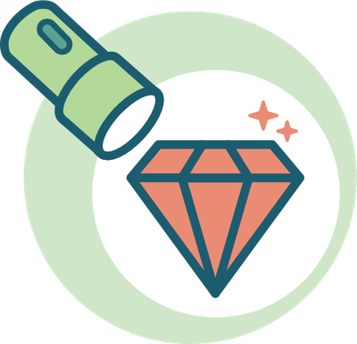
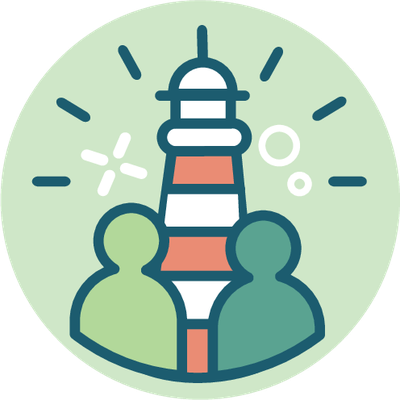

What is this overview for?

Making the invisible visible and building bridges

Make more visible
Make the diversity of national, cantonal and local food education stakeholders more visible.
Create synergies
Identify synergies and advance opportunities for collaboration.

Provide orientation
Get to know the existing landscape before launching new projects.